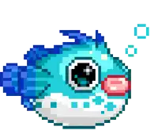
i really like music and i have really diverse taste tbh here’s some music i was listening to while making this page: (trying to listen to music that gives off the same vibe) this playlist boots up old memories. this Is What Frutiger Aero Sounds Like Persona3 20th Anniversary Remix this album feels like a cigarette at 2AM MARLBORO | Atmospheric Liquid DnB Mix iPod 2001 | Atmospheric Liquid DnB Mix for Coding & Focus my spotify playlist
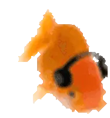
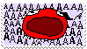
fav animes this is a hard one but at the moment of writing this page the top 5 for me are (not in order): Jojo Evangelion Gintama Monster Attack On Titan hm: Orb: On the Movements of the Earth The Summer Hikaru Died Steins Gate Mononoke Mob Psycho Initial D Haikyuu Serial Experiments Lain MyAnimeList - Denis16X
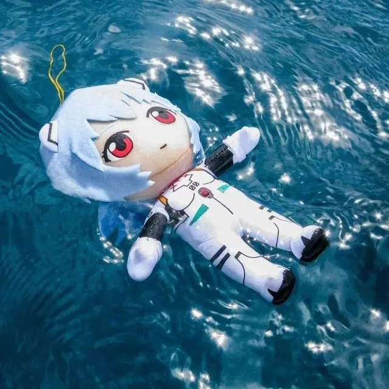
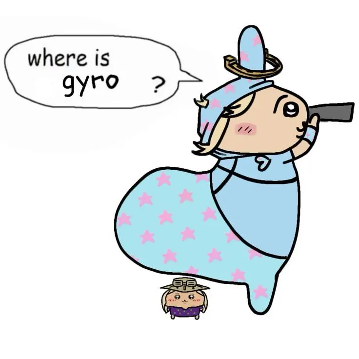
fav manga: houseki no kuni - def my favorite manga of all time , the artstyle , the characters, the story perfect!!!, also has phos my fav character of all time pluto,monster,billy bad, 20th century boys(basically all of naoki urasawa works) - i swear he cooks every single time innocent, the climber, drcl - one of the best mangakas of all time imo jojo aot vagabond hm: chainsaw man hxh real nana the promised neverland
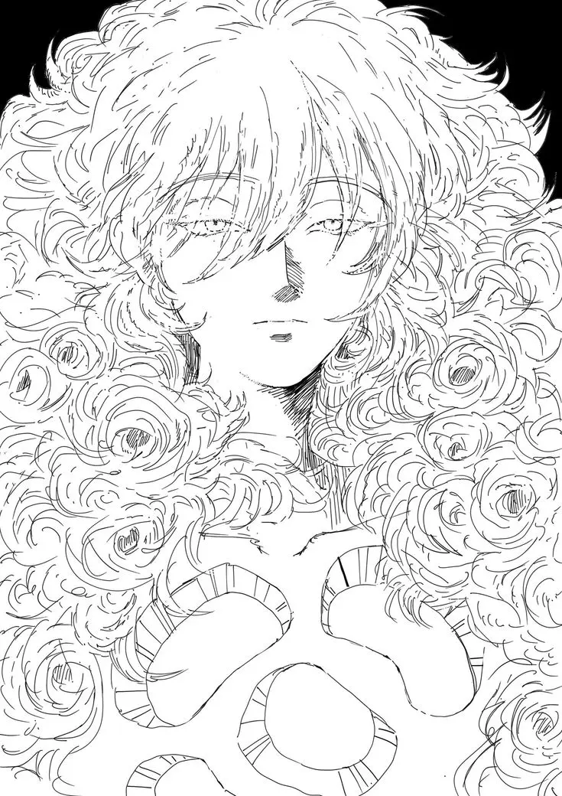
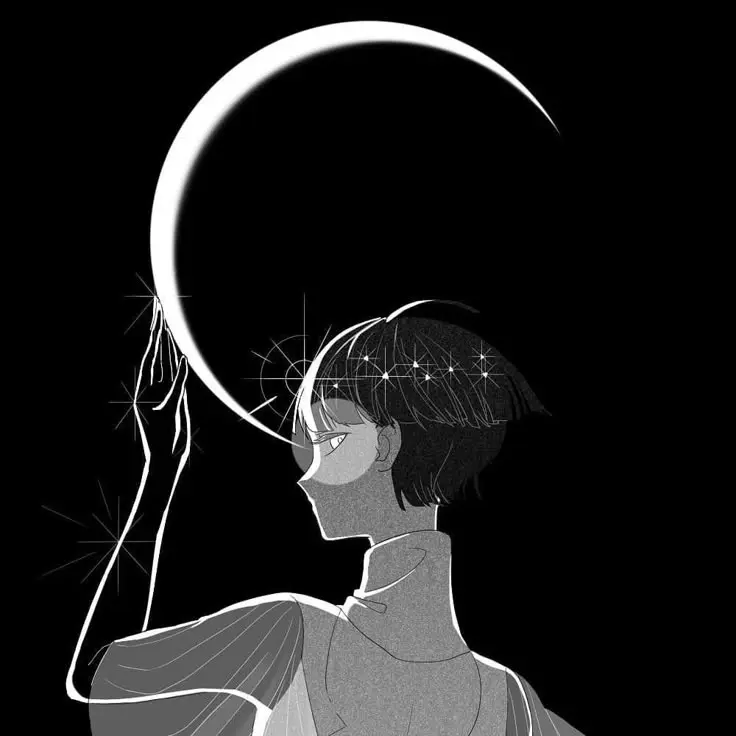
my fav food is probably fast food like pizza or burgers also love sweets of any kind (depends on texture) but i prefer tiramisu and cheesecake i like fruits like pomegranates, oranges, quinces, watermelon, cherries, strawberries. pears
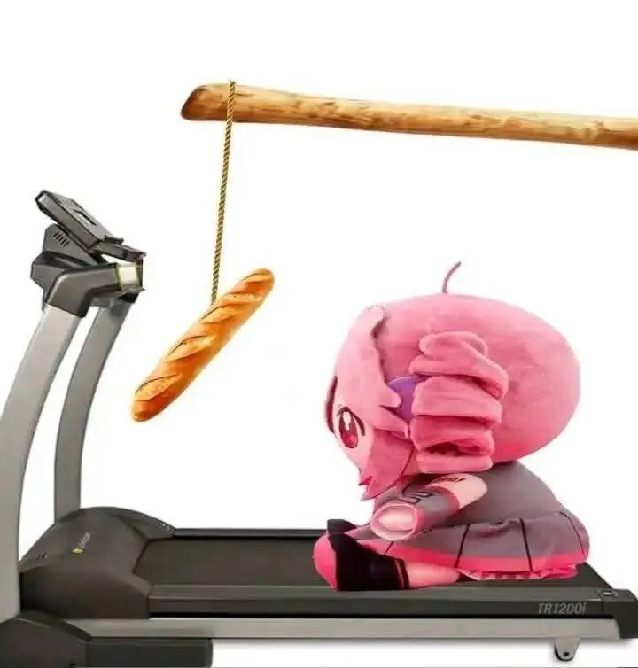
my fav games: ff7 (the og one) persona 3 (reload), 4(golden - cant wait for revival), 5(royal) metaphor refantazio expedition 33 cyberpunk the house in fata morgana
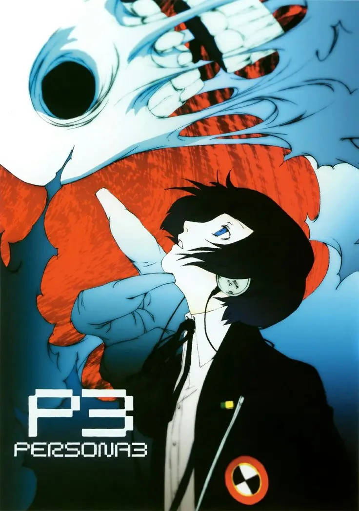
GALLERY
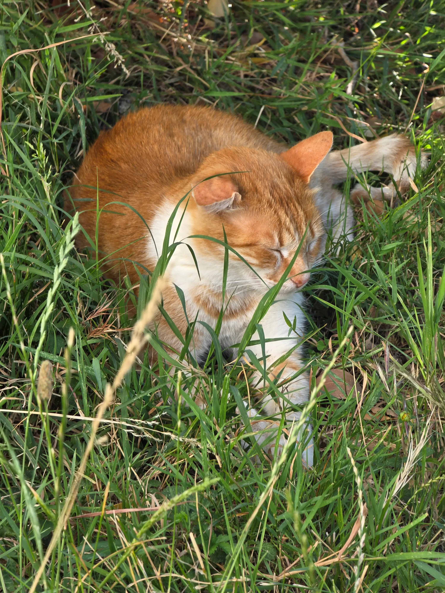
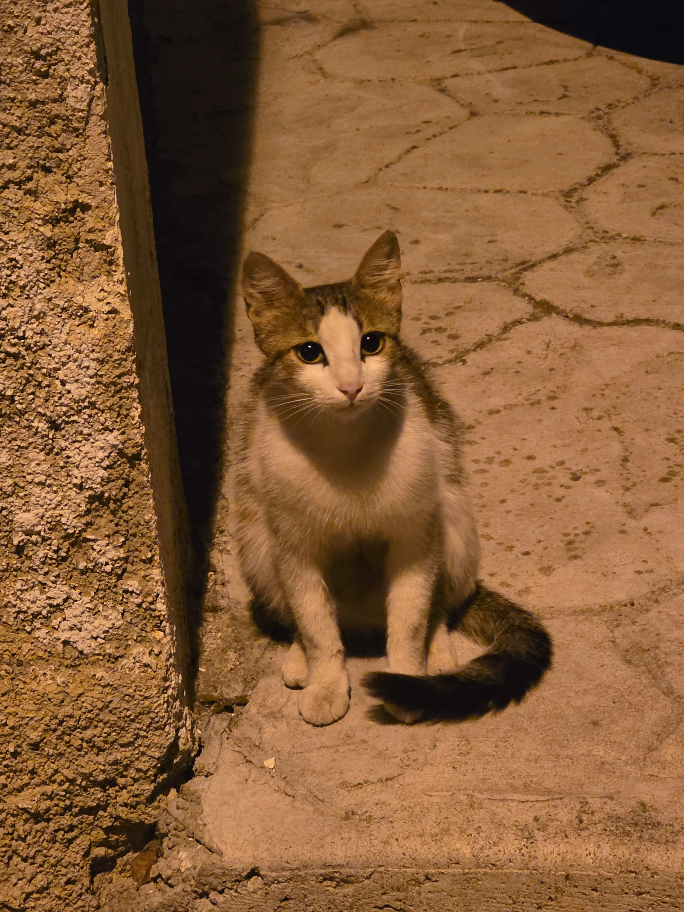
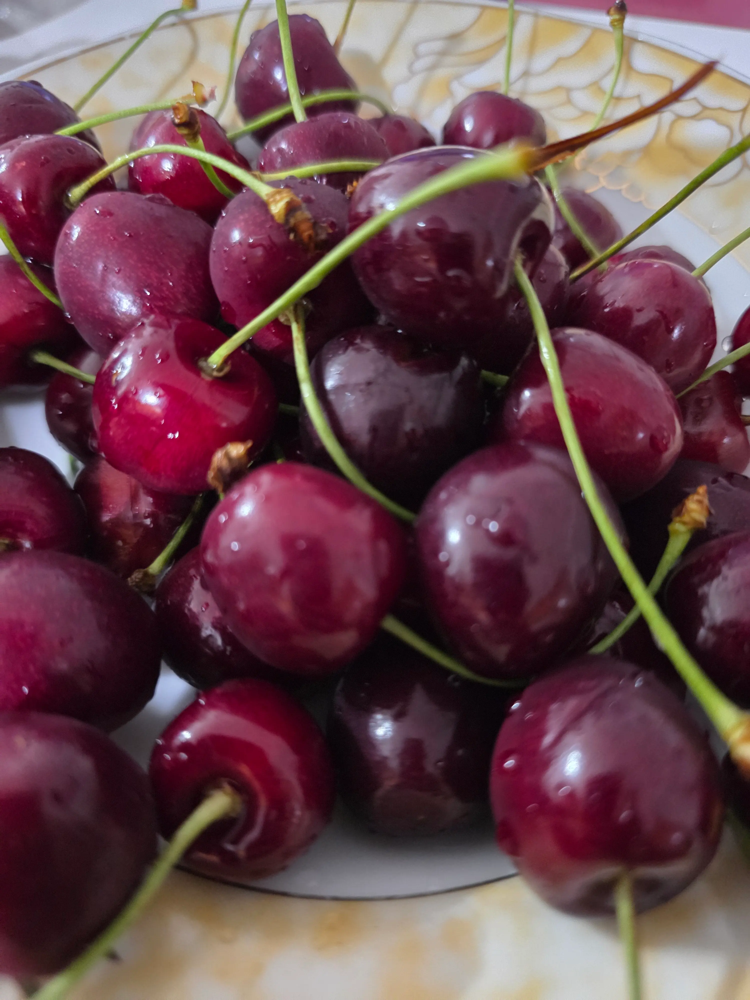
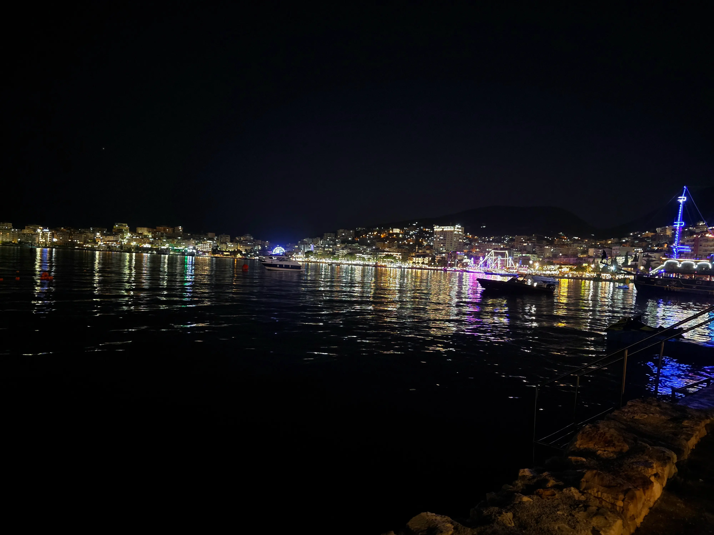
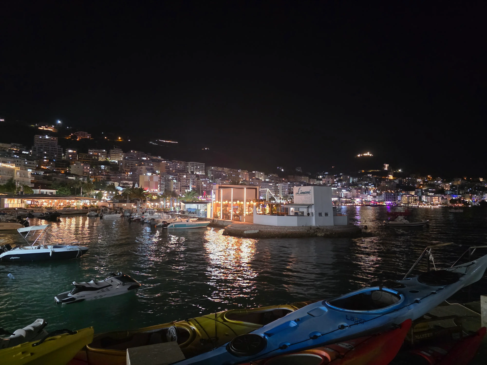
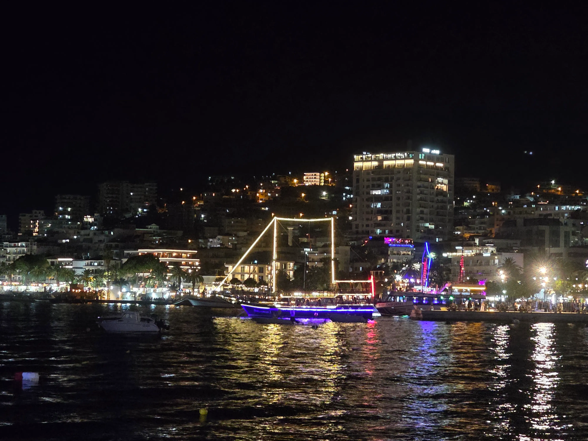
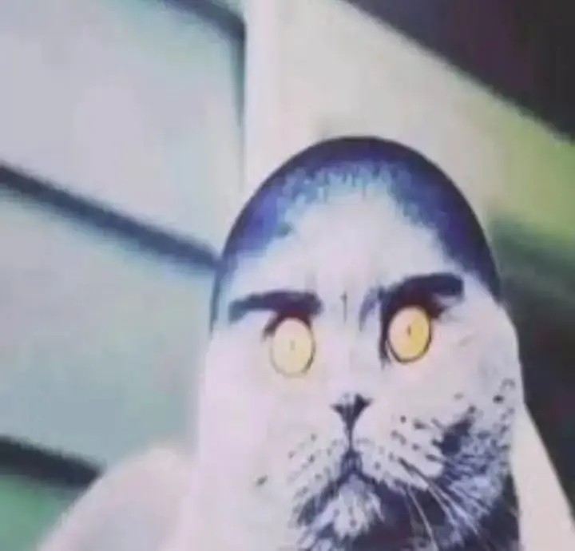
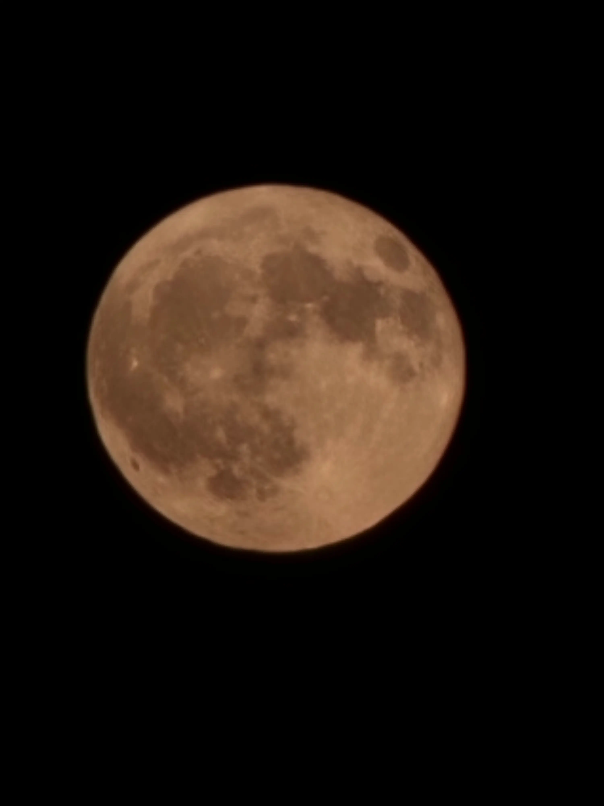
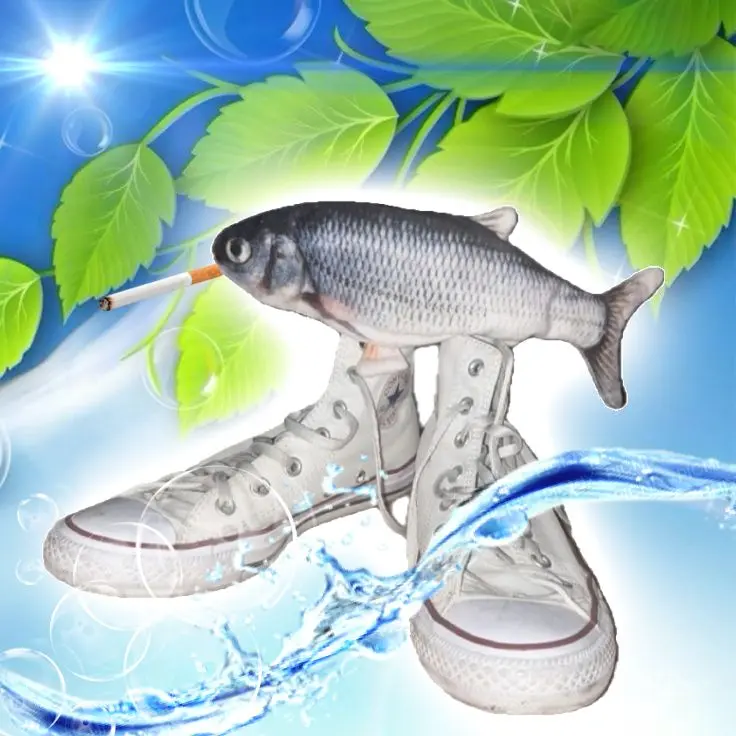
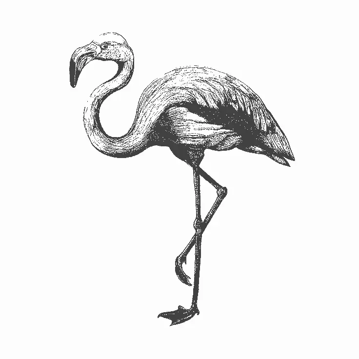
socials: github - DenDev712-Github gitlab - DenDev712-Gitlab pinterest - dp.7.12 discord - kirbys_big_stomach steam - ParadoxalGoat